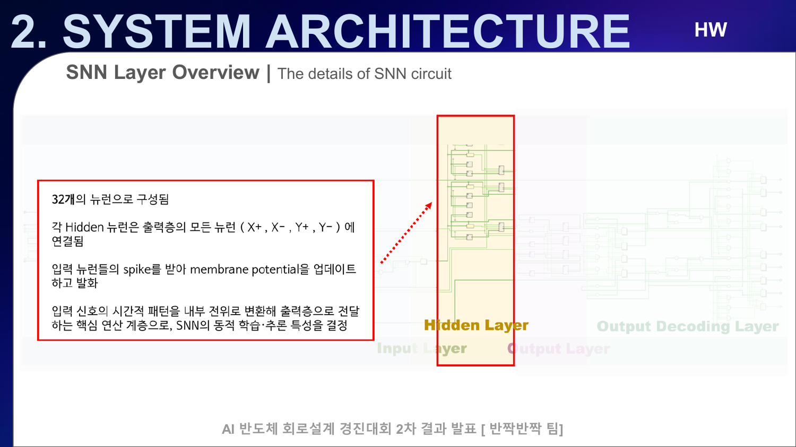

1. SNN 조사에서 BallControl 설계 문제로
2025 전국 대학생 AI 반도체 회로 설계 경진대회는 1차의 SNN/LIF 조사와 2차의 BallControl 설계가 이어지는 프로젝트였다. 팀 반짝반짝의 팀장으로서 기술 조사 방향과 일정, Q&A 요구사항 정리, 발표자료 통합과 최종 산출물 패키징을 맡았고, 2차에서는 요구사항을 RTL 입력과 출력 관점으로 다시 정의해 output-layer 제어 파이프라인으로 연결했다.
1.1 먼저 뉴런을 하드웨어로 어떻게 표현할지 조사했다
1차 과제에서는 생물학적 뉴런을 그대로 복제하는 것이 아니라, FPGA에서 확장 가능한 디지털 뉴런을 어떤 수준으로 단순화할지 결정해야 했다. Hodgkin–Huxley와 Izhikevich 모델은 더 다양한 생물학적 특성을 표현할 수 있지만 상태 변수와 연산량이 커진다. 반면 LIF(Leaky Integrate-and-Fire)는 입력 누적, 누설, 임계값 비교, 발화와 리셋이라는 핵심 상태만 유지한다.
그래서 대규모 fan-in과 모듈식 확장 가능성을 우선한 설계에서는 LIF를 기준 뉴런으로 선택했다. ODIN과 QuantiSenc 같은 공개 연구를 조사하며 흥분성·억제성 입력, 정수 상태 표현, event-driven 처리와 time-multiplexing 구조를 비교했다. 이 단계의 목적은 논문을 요약하는 데 그치지 않고, 2차 응용 문제에서 사용할 수 있는 뉴런의 입력·상태·출력 계약을 만드는 것이었다.
1.2 자연어 조건을 회로 사양으로 바꿨다
2차 BallControl 과제의 Q&A에서 확인한 조건은 보드 크기 30×30cm, 공 무게 1~30g, 무작위 초기 위치, 중앙 1cm 범위 도달이었다. 그대로는 RTL port나 state transition을 정할 수 없기 때문에 제어 입력과 출력으로 다시 분해했다.
| 과제 조건 | 회로 관점의 질문 | 설계에 반영한 형태 |
|---|---|---|
| 무작위 초기 위치 | 중심에서 어느 방향으로 벗어났는가? | signed x/y 위치 오차 |
| 네 방향 구동 | 어떤 actuator를 활성화할 것인가? | X pull/push, Y pull/push 4채널 |
| 공 무게 1~30g | 같은 위치 오차라도 반응을 어떻게 바꿀 것인가? | rate/속도 크기 입력으로 발화 조건 조정 |
| 중앙 1cm 목표 | 언제 제어 출력을 줄이거나 멈출 것인가? | 오차 크기와 LIF 임계값의 관계로 해석 |
이 변환의 핵심은 “SNN을 썼다”가 아니라 위치 오차의 부호를 방향으로 분리하고, 오차와 속도 크기가 뉴런의 막전위에 영향을 주도록 만든 것이다. 이렇게 해야 센서 입력, 뉴런 상태, 모터 출력 사이의 검증 가능한 경계가 생긴다.
1.3 하나의 거대한 네트워크보다 검증 가능한 계층을 선택했다
발표자료의 전체 제안은 입력층, hidden layer, output layer와 decoding으로 구성된다. 하지만 최종 공개 글에서는 가장 직접적으로 코드가 남아 있는 output-layer를 중심으로 설명한다. 위치 오차를 네 방향의 양수 자극으로 바꾸고, 동일한 형태의 LIF 뉴런 네 개에 공급한 뒤, spike를 모터 제어 출력에 직접 연결하는 구조다.

1.4 핵심 설계 판단
- LIF 선택: 생물학적 정밀도보다 RTL 상태와 임계값 동작을 명확히 검증할 수 있는 단순한 뉴런 모델을 우선했다.
- 방향 분리: signed 좌표를 그대로 한 뉴런에 넣지 않고 X/Y의 pull·push 네 양수 채널로 분리했다.
- 동일 모듈 재사용: 네 방향에 같은 LIF 모듈을 generate로 배치해 파라미터와 인터페이스를 통일했다.
- 단계적 실험: 먼저 위치만 반영한 one-shot 입력을 확인하고, 이후 무게를 rate로 반영하는 입력으로 확장했다.
1.5 다음 글에서 확인할 것
다음 글에서는 error_encoder.v, lif_neuron.v,
controller_top.v를 실제 코드 순서대로 읽으며 signed 오차가
어떻게 네 방향 spike로 바뀌는지 설명한다.